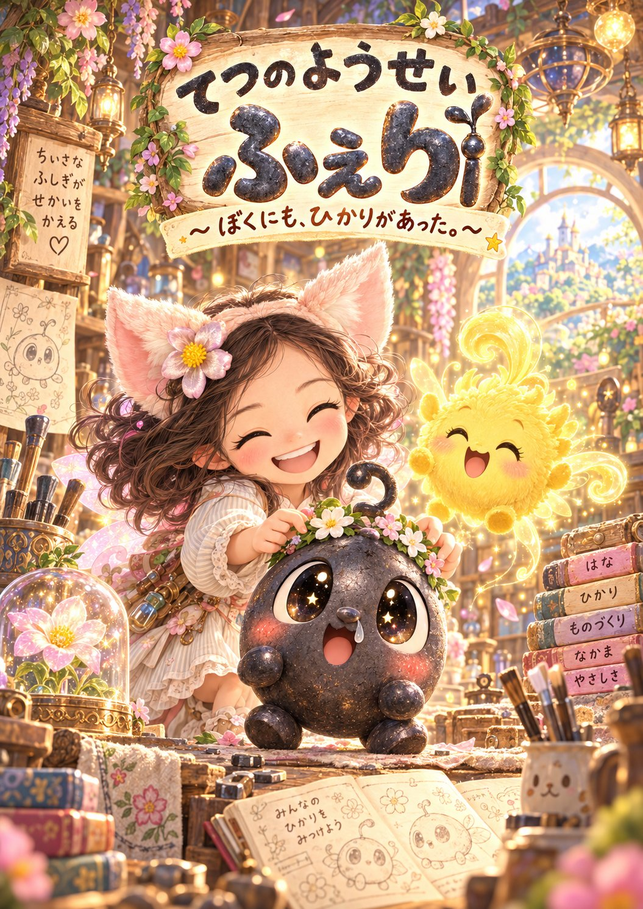
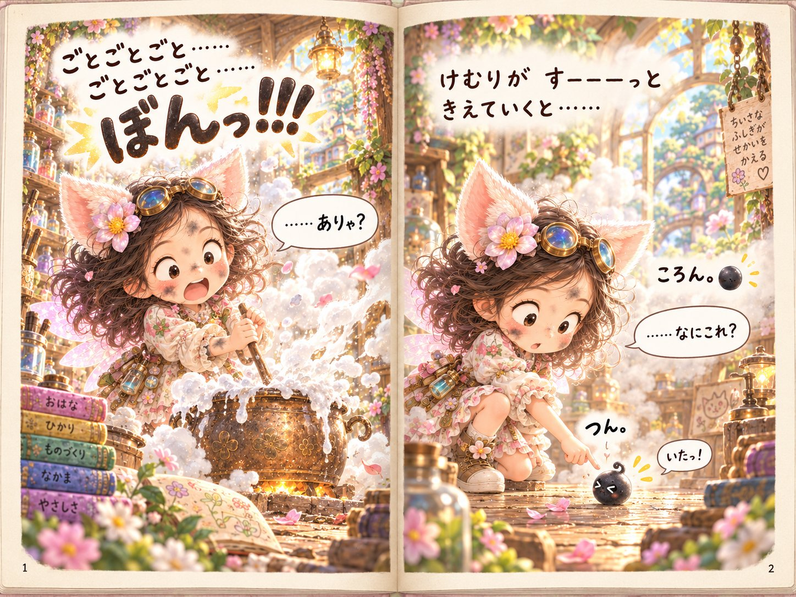
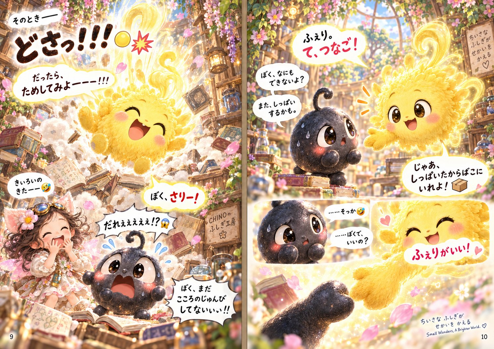
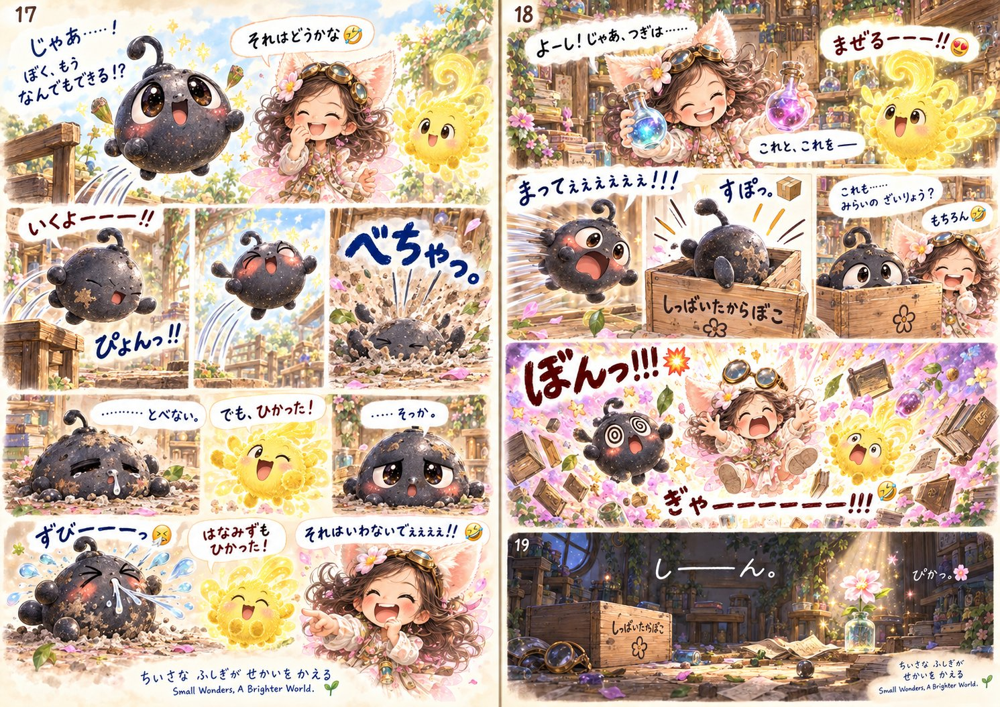

医療とライフサイエンスMedicine and life science
- 検査・分離に使う材料Materials for separation and diagnostics
- 動物医療での共同研究Veterinary research collaboration
同じ素材の医薬品が、すでに承認されています。Products made from the same material are already approved.
東京科学大学を中心とする研究チームが、40年の蓄積をひとつの材料に注いでいます。 A research team centred on Institute of Science Tokyo, bringing four decades of work to bear on a single material.
研究チームThe team
名誉教授、元学長、現役の研究者。東京科学大学の複数の研究室と東京大学にまたがるチームです。 Professors emeriti, a former university president, and working researchers — a team spanning several laboratories at Institute of Science Tokyo and The University of Tokyo.
代表の玉浦裕は、鉄をつかった太陽熱化学という分野を切り開いた研究者です。1990年には、二酸化炭素を炭素まで完全に還元する反応を Nature 誌に報告しています。
Yutaka Tamaura opened the field of iron-based solar thermochemistry. In 1990 he reported in Nature the complete reduction of carbon dioxide to carbon.
Tamaura & Tahata, Nature 346, 255 (1990) · doi:10.1038/346255a0
いまの材料の出発点になった化学も、同じ研究者が1984年に確立したものです。その40年後に、それが新しい使い道を持ちました。
The chemistry this material begins from was established by the same researcher in 1984. Forty years later, it found a new use.
制作メモ：顔写真に差し替える前提の仮置きです。並び順・強調する方はご相談のうえ確定します。
Production note: placeholders pending portrait photography. Order and emphasis to be confirmed.
目指すものWhat we make
新しい元素でも、新しい物理でもありません。私たちが持っているのは、新しいつくり方です。
Not a new element. Not new physics. What we have is a new way of making things.
使うのは、鉄と酸素と硫黄だけです。カドミウムも、鉛も、水銀も、インジウムも入っていません。いま世界で使われている材料は、そのどれかを含んでいます。
Iron, oxygen and sulfur — nothing else. No cadmium, no lead, no mercury, no indium. Every comparable material in use today contains one of them.
高い温度も、有機溶媒も使いません。有害な廃液が出ません。原料は、安く手に入る鉄の化合物です。
No high temperatures, no organic solvents, no toxic waste stream. The feedstock is an inexpensive, widely available iron compound.
特別な設備を必要としません。小さなフラスコでも、大きな槽でも、同じものができることを確かめています。
No specialised equipment is required. We have confirmed that a small flask and a large vessel give the same result.
医療の現場から、産業用のセンサーまで。ひとつの製法から、性質の異なるいくつかの材料が生まれます。
From clinical settings to industrial sensing. One process yields several materials with different properties.
なぜ今かWhy now
いま使われている材料が直面しているのは、性能の限界ではありません。使い続けられるかどうかです。 What the incumbent materials face is not a performance ceiling. It is whether they can continue to be used at all.
欧州で、カドミウムを使う材料への適用除外が失効しましたIn Europe, the exemption allowing cadmium in these materials expired
更新申請の期限。公開されている申請一覧に、該当する申請は見当たりませんThe renewal deadline passed. No corresponding request appears in the published list
残る適用除外も失効する予定ですThe remaining exemption is due to lapse
代わりに使われている材料も、無傷ではありません。発がん性の分類を受けているもの、供給が一国に偏っているもの、水銀や鉛を含むもの。鉄と酸素と硫黄は、そのいずれにも当たりません。 Nor are the substitutes untouched: one is classified as a carcinogen, another depends on a supply chain concentrated in a single country, others contain mercury or lead. Iron, oxygen and sulfur fall under none of these.
進めかたHow we proceed
同じ素材の医薬品が、すでに承認されています。Products made from the same material are already approved.
既存の材料が規制に触れている領域です。Areas where the incumbent materials are exposed to regulation.
自社工場は持ちません。製造は委託します。We will not build a plant. Production is contracted out.
たしかめていることBeing verified
材料の性質は、いま外部の機関で測定を進めています。どの結果が出たら何を取り下げるかを、測る前に決めてあります。結果は、良くても悪くても公表します。 The material's properties are being measured by independent laboratories. Before the measurements began, we set down what result would make us withdraw which claim. We will publish the outcome either way.
研究成果はプレプリントとして公開しています。査読前であり、査読誌への投稿を準備中です。
Our results are posted as a preprint. It is not yet peer reviewed; submission to a journal is in preparation.
はじめての方へFor everyone else

ちいさな ふしぎが せかいを かえる
Small Wonders, A Brighter World.
『てつのようせい ふぇり』 〜ぼくにも、ひかりがあった。〜
“Feri, the Iron Fairy” — There was light in me after all.
ようせいの工房で、ある日ぼんっと生まれた、ちいさな黒いつぶ。とぼうとして落ち、うまくいかなくて泣きます。「ぼく、なにもできないよ」と言うふぇりに、なかまが手をさしだす——そういう話です。
A small black speck comes into the world with a bang in a fairy's workshop. It tries to fly and falls. It cannot do the thing it wanted to do, and it cries. When it says “I'm no use to anyone,” someone reaches out a hand.
工房には 「しっぱいたからばこ」 という箱があります。うまくいかなかったものを、捨てずに入れておく箱です。
In the workshop there is a box marked “the failure treasure chest.” Things that did not work are not thrown away. They are kept.
とべなかったふぇりに、なかまがこう言います。「でも、ひかった!」
And to the speck that could not fly, a friend says: “But you shone!”
研究とは、そういうものだと思っています。難しい言葉は、この本にひとつも出てきません。
That, we think, is what research is. Not one technical term appears in the book.



キャラクター・作画：ちのーる（オリジナル） Characters and artwork: Chinoru (original)
組織Company
研究、知的財産、事業をひとつの持株会社のもとに束ねるため、設立の準備を進めています。 A holding company being formed to bring research, intellectual property and commercial operations under one roof.
※ 設立時に予定している構成です。現時点で稼働している部門はありません。 The structure planned at incorporation. No division is operating yet.
お問い合わせGet in touch
技術資料、共同研究、事業提携、投資に関するご相談。英語でも対応いたします。 Technical documentation, research collaboration, partnership, investment. We correspond in English.